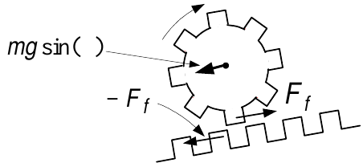
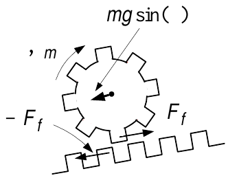

Rigid Body Rotational Dynamics
System Modeling and Control · Chapter 5

The cylinder is constrained to rotate about the \(z\) axis.
\({{\vec{\mathbf{F}}}}\) is applied to the cylinder at \((r,\theta ).\)
\({{\vec{\mathbf{r}}=r}}\mathbf{\hat{r}}\) is the point of application of the force \({{\vec{\mathbf{F}}.}}\)
\({{\vec{\mathbf{F}}}}=F_{N}\mathbf{\hat{r}}+F_{T}\mathbf{\hat{\theta}.}\)
\(F_{T}\) is tangent to the rotational motion and \(F_{N}\) is normal to the rotational motion.
\(\psi\) is the angle from \({{\vec{\mathbf{r}}}}\) to \({{\vec{\mathbf{F}}}}\).
Definition Torque \[{{\vec{\mathbf{\tau }}}}\triangleq {{\vec{\mathbf{r}}}}\times {{\vec{\mathbf{F}}}}=r\mathbf{\hat{r}}\times \left( F_{N}\mathbf{\hat{r}}+F_{T}\mathbf{\hat{\theta}}\right) =rF_{N}\underset{\boldsymbol{\vec{0}}}{\underbrace{\mathbf{\hat{r}}\times \mathbf{\hat{r}}}}+rF_{T}\underset{\mathbf{\hat{z}}}{\underbrace{\mathbf{\hat{r}\times \hat{\theta}}}}=rF_{T}\mathbf{\hat{z}}=r|{{\vec{\mathbf{F}}}}|\sin (\psi )\mathbf{\hat{z}.}\]
Newton’s Law of Rotational Motion
\(\mathbf{\tau }=Jd\mathbf{\omega }/dt\)

Let \({{\vec{\mathbf{F}}}}\) act on the cylinder to move (rotate) it by a displacement \(d{{\vec{\mathbf{s}}}}\triangleq ds\mathbf{\hat{\theta}}=rd\theta \mathbf{\hat{\theta}}\).
The change in work done by this force is \[dW={{\vec{\mathbf{F}}}}\cdot d{{\vec{\mathbf{s}}}}=F_{T}rd\theta =\tau d\theta .\]
Dividing by \(dt\), the power (rate of work) delivered to the cylinder is \[\frac{dW}{dt}=\tau \frac{d\theta }{dt}=\tau \omega .\]
As the rate of work done equals the rate of change of kinetic energy: \[\frac{dW}{dt}=\frac{d}{dt}\left( \frac{1}{2}J\omega ^{2}\right) =\tau \frac{d\theta }{dt}\text{ or }J\omega \frac{d\omega }{dt}=\tau \omega .\]
Newton’s Law of Rotational Motion: \(\tau =J\dfrac{d\omega }{dt}.\)
Example Rack and Pinion System

Converts rotary motion to linear motion and vice-versa.
A torque \(\tau\) applied to the shaft causes the pinion wheel to rotate.
The pinion moves the rack in the \(x\) direction.
The input is the torque \(\tau\) (produced by a motor).
The output is the rack position \(x\).
The teeth on the pinion wheel and rack are meshed together.
- This means that \(x=r\theta .\)
\(m\) is the mass of the rack and \(J\) is the moment of inertia of the pinion wheel.
Let \(F\) be the force of the pinion tooth on the rack tooth in the \(x\) direction.
\(-F\) is the reaction force of the rack tooth on the pinion tooth.
Example Satellite with Solar Panels
A satellite has solar panels to provide electric power.
The panels are flexible in order to make them light.
Model as two rigid bodies connected by a torsional spring and rotational damper.

The dynamic equations of this satellite system are \[\begin{aligned} J_{s}\frac{d^{2}\theta }{dt^{2}} &=&-K(\theta -\theta _{p})-b\left( \frac{d\theta }{dt}-\frac{d\theta _{p}}{dt}\right) +\tau \\ J_{p}\frac{d^{2}\theta _{p}}{dt^{2}} &=&K(\theta -\theta _{p})+b\left( \frac{d\theta }{dt}-\frac{d\theta _{p}}{dt}\right) . \end{aligned}\]Laplace transforms with zero initial conditions: \[\begin{aligned} s^{2}J_{s}\theta (s)+bs\theta (s)+K\theta (s) &=&bs\theta _{p}(s)+K\theta _{p}(s)+\tau (s) \\ s^{2}J_{p}\theta _{p}(s)+bs\theta _{p}(s)+K\theta _{p}(s) &=&bs\theta (s)+K\theta (s). \end{aligned}\]
Coordinate Systems for the Two Gears

\({{\vec{\mathbf{F}}}}_{1}=-F\mathbf{\hat{x}}\ \)and \({{\vec{\mathbf{F}}}}_{2}\triangleq F\mathbf{\hat{x}}\) as \({{\vec{\mathbf{F}}}}_{1}\) &\(\ {{\vec{\mathbf{F}}}}_{2}\) are equal in mag, but opposite in direction.
\({{\vec{\mathbf{F}}}}_{1}\triangleq F(-\mathbf{\hat{x}})\) so that if \(F>0\), the force is in the \(-\mathbf{\hat{x}}\) direction.
\({{\vec{\mathbf{r}}}}_{1}\triangleq r_{1}(-\mathbf{\hat{y}})\) so that \({{\vec{\mathbf{\tau }}}}_{1}={{\vec{\mathbf{r}}}}_{1}\times {{\vec{\mathbf{F}}}}_{1}=r_{1}F(-\mathbf{\hat{y}})\times (-\mathbf{\hat{x}})=r_{1}F(-\mathbf{\hat{z}})=r_{1}F\mathbf{\hat{n}}\).
- \({{\vec{\mathbf{\tau }}}}_{1}=\tau _{1}\mathbf{\hat{n}}\) where \(\tau _{1}=r_{1}F\) and \(\mathbf{\hat{n}\triangleq }-\mathbf{\hat{z}}\) is a unit vector.
\({{\vec{\mathbf{F}}}}_{2}\triangleq F\mathbf{\hat{x}}\) so that if \(F>0\) the force is in the \(\mathbf{\hat{x}}\) direction.
\({{\vec{\mathbf{r}}}}_{2}\triangleq r_{2}\mathbf{\hat{y}}\) and \({{\vec{\mathbf{\tau }}}}_{2}={{\vec{\mathbf{r}}}}_{2}\times {{\vec{\mathbf{F}}}}_{2}=r_{2}F(-\mathbf{\hat{z}})=-\tau _{2}\mathbf{\hat{z}}=\tau _{2}\mathbf{\hat{n}}\) with \(\tau _{2}=r_{2}F\).
Tension

Block of mass \(m\) tied to a ceiling through a cable.
There is a tension (force) \(T_{1}\) upward on the mass \(m\) by the cable.
At the top there is a tension (force) \(T_{1}\) downward exerted on the ceiling.
Think of tension as a spring that can only be stretched not compressed.
The cables “spring constant” is essentially infinite (\(k=\infty\)).
When the two ends of a cable are pulled apart, the cable doesn’t stretch.
However, it produces restoring forces.
Rolling on a Flat Surface Without Slipping

\(P\) is the point of contact between the cylinder and the surface.
The center of mass is directly above the point \(P\).
The point of contact \(P\) moves along the flat surface at velocity \(dx/dt=r\omega .\)
So the center of mass (axis of rotation) also has velocity \(dx/dt,\) i.e., \[v_{cm}=\frac{dx}{dt}.\]
The cylinder rotates about its center of mass with angular rate \[\omega =\frac{d\theta }{dt}=\frac{d(x/r)}{dt}=\frac{\dot{x}}{r}=\frac{v_{cm}}{r}.\]
Cylinder Rolling Down an Inclined Plane

The \(x\) direction is taken to be positive going up the inclined plane.
The \(y\) direction is perpendicular to the inclined plane.
The component of gravity \(mg\sin (\phi )\) pulls the cylinder in the \(-x\) direction.
There is a static friction force \(F_{f}\) on the cylinder by the inclined plane.
\(F_{f}\) is the force that causes the cylinder to rotate!
Visualize the interaction of the surfaces as a rack & pinion system.

The cylinder exerts a force \(-F_{f}\) on the surface.
\(F_{f}\) is not viscous friction and so there is no energy loss (see next slide).
Equations of Motion of the Rolling Cylinder

Newton’s laws are valid with respect to non accelerating coordinate systems.
This is true of rotational law \(\tau =Jd\omega /dt\) as well.
However, \(\tau =Jd\omega /dt\) also holds in an accelerating coordinate system IF
the axis of rotation is through the center of mass.
There is a static friction force \(F_{f}\) at the point of contact.
\((x,y)\) are the coordinates of the center of mass of the cylinder.\[\begin{aligned} m\frac{d^{2}y}{dt^{2}} &=&-mg\cos (\phi )+N=0 \\ m\frac{d^{2}x}{dt^{2}} &=&-mg\sin (\phi )+F_{f} \\ J\frac{d^{2}\theta }{dt^{2}} &=&-rF_{f} \\ x &=&r\theta . \end{aligned}\]
Summary of Using Newton’s Equations for a Rigid Body

Translational motion of a rigid body.
Apply \(F=ma\) to the center of mass of the rigid body.
Must be done in an inertial (non accelerating) coordinate system.
\(F\) is the sum of all forces acting on the rigid body.
E.g., the two forces on the cylinder are \(-mg\sin (\phi )\) and \(F_{f}.\)
\((x,y)\) are the coordinates of the center of mass of the cylinder.
Rotational motion of a rigid body.
Apply \(\tau =Jd\omega /dt\) where \(\tau\) is the sum of all torques about its center of mass.
Inertial system not required if applied about the center of mass.
The only torque about the center of mass is \(-rF_{f}\).
The force \(mg\) acts through the center of mass so its moment arm is zero.
Motorized Cylinder Going Up an Inclined Plane

The cylinder now has a motor inside to produce a torque \(\tau _{m}\).
\(F_{f}\) is the force of the inclined plane on the cylinder.

- It is this force \(F_{f}\) that propels the cylinder up the inclined plane.
Example Pulley and Cylinder

A solid cylinder rolls down an incline and wraps up a thin paper tape (non sticky).
The other end of the tape goes over a cylindrical massless pulley (\(m_{p}=J_{p}=0\)).
The tape is attached to a box of mass \(m_{box}\).
As the cylinder rolls down it wraps up the thin paper about itself with no slip.
With \((x,y)\) the position of the center of mass of the cylinder: \(x=R\theta\) or \(\dot{x}=R\omega .\)
Example Pulley and Cylinder (continued)

The upward speed of \(m_{box}\) is \(\dot{z}.\)
This is the same as the linear speed of the tape as it is rolled up.
The velocity of the tape at the top of the cylinder is \(\dot{x}+R\omega =\dot{x}+R\dot{x}/R=2\dot{x}.\)
The velocity of \(m_{box}\) is given by \(\dot{z}=2\dot{x}.\)
\(T_{1}\) and \(T_{2}\) are the tensions in the tape on either side of the pulley.
The pulley equation is \(J_{p}\dfrac{d\omega _{p}}{dt}=R_{p}T_{1}-R_{p}T_{2}.\)
As \(J_{p}=0\), \(T_{1}=T_{2}.\)